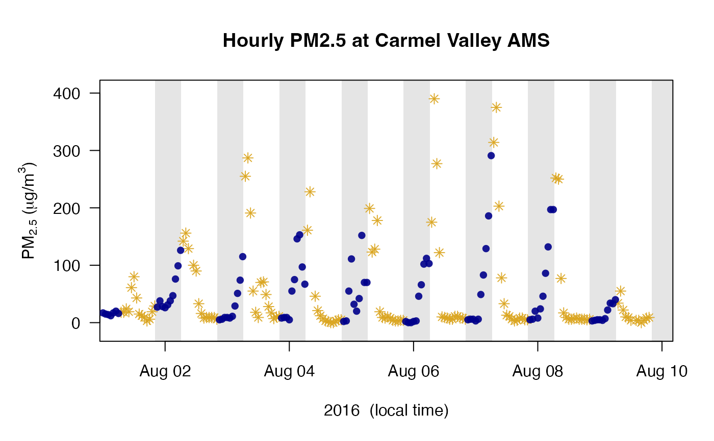

Calculate the local time for a monitor, as well as sunrise, sunset and solar noon times, and create several temporal masks.
The returned dataframe will have as many rows as the length of the incoming
UTC time vector and will contain the following columns:
localStdTime_UTC -- UTC representation of local standard time
daylightSavings -- logical mask = TRUE if daylight savings is in effect
localTime -- local clock time
sunrise -- time of sunrise on each localTime day
sunset -- time of sunset on each localTime day
solarnoon -- time of solar noon on each localTime day
day -- logical mask = TRUE between sunrise and sunset
morning -- logical mask = TRUE between sunrise and solarnoon
afternoon -- logical mask = TRUE between solarnoon and sunset
night -- logical mask = opposite of day
monitor_timeInfo(monitor = NULL, id = NULL)mts_monitor object.
deviceDeploymentID used to select a single time
series found in monitor. -- optional if monitor only has one
time series.
A dataframe with times and masks.
While the lubridate package makes it easy to work in local timezones, there is no easy way in R to work in "Local Standard Time" (LST) (i.e. never shifting to daylight savings) as is often required when working with air quality data. US EPA regulations mandate that daily averages be calculated based on LST.
The localStdTime_UTC is primarily for use internally and provides
an important tool for creating LST daily averages and LST axis labeling.
library(AirMonitor)
carmel <-
Carmel_Valley %>%
monitor_filterDate(20160801, 20160810)
# Create timeInfo object for this monitor
ti <- monitor_timeInfo(carmel)
# Subset the data based on day/night masks
data_day <- carmel$data[ti$day,]
data_night <- carmel$data[ti$night,]
# Build two monitor objects
carmel_day <- list(meta = carmel$meta, data = data_day)
carmel_night <- list(meta = carmel$meta, data = data_night)
# Plot them
carmel_day %>%
monitor_timeseriesPlot(
pch = 8,
col = "goldenrod",
shadedNight = TRUE
)
carmel_night %>%
monitor_timeseriesPlot(
add = TRUE,
pch = 16,
col = "darkblue"
)
